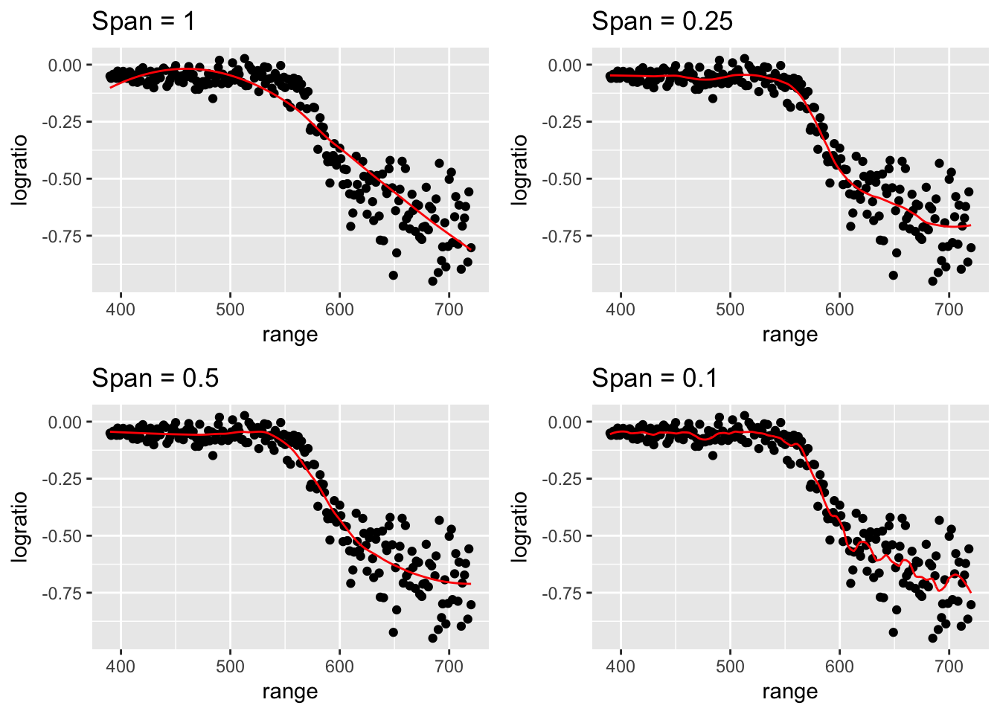

Chapter 7 Beyond Linearity
library(dplyr) # data frame manipulations
library(ggplot2) # plotting
library(caret)
library(gam) # for loess and GAMWe will consider a simple regression problem where a flexible model is appropriate.
data('lidar', package='SemiPar')
ggplot(lidar, aes(x=range, y=logratio)) +
geom_point()This is data from a lidar experiment (light dectection and ranging). The goal is to use the device to estimate the range at which an object is from the device operator. Light from two lasers is reflected back and the ratio of the received light from the two is observed. The exact context doesn’t matter too much, but it is a nice set of data to try to fit a curve to.
7.1 Locally Weighted Scatterplot Smoothing (LOESS)
There are a number of ways to access a LOESS smooth in R. The base R function loess() works well, but has no mechanisms for using cross validation to select the tuning parameter.
#' Span: proportion of observations to be used
#' degree: the degree of polynomial we fit at each local point.
spans <- c(1, .5, .25, .1)
P <- NULL
for( i in 1:4 ){
model <- loess(logratio ~ range, data=lidar,
span = spans[i], degree=2 )
lidar$yhat <- predict(model, newdata=lidar)
P[[i]] <-
ggplot(lidar, aes(x=range, y=logratio)) +
geom_point() +
geom_line(aes(y=yhat), color='red') +
labs(title=paste('Span =',spans[i]))
}
Rmisc::multiplot(P[[1]], P[[2]], P[[3]], P[[4]], layout = matrix(1:4, nrow=2))
To select the tuning parameter via cross validation, we ought to jump to the caret package.
#' Span: proportion of observations to be used
#' degree: the degree of polynomial we fit at each local point.
ctrl <- trainControl( method='repeatedcv', repeats=2, number=10)
grid <- data.frame( span=seq(.01,.95,by=.02), degree=1)
model <- train(logratio ~ range, data=lidar, method='gamLoess',
trControl=ctrl, tuneGrid=grid)
lidar$yhat <- predict(model, newdata=lidar)
ggplot(lidar, aes(x=range, y=logratio)) +
geom_point() +
geom_line(aes(y=yhat), color='red')model$bestTune ## span degree
## 12 0.23 17.2 Piecewise linear
7.3 GAMS
7.4 Exercises
- ISLR 7.1. It was mentioned in the chapter that a cubic regression spline with one knot at \(\xi\) can be obtained using a basis of the form \(x, x^2, x^3, (x-\xi)^3_+\), where \((x-\xi)^3_+ = (x-\xi)^3\) if \(x>\xi\) and equals \(0\) otherwise. We will now show that a function of the form \[f(x) = \beta_0 + \beta_1 x + \beta_2 x^2 + \beta_3 x^3 + \beta_4 (x-\xi)^3_+\] is indeed a cubic regression spline, regardless of the values of \(\beta_0, \beta_1, \beta_2, \beta_3,\) and \(\beta_4\). To do this we need to show that \(f(x)\) is a degree 3 polynomial on each piece and that the 0\(^{th}\), 1\(^{st}\), and 2\(^{nd}\) derivatives are continuous at \(\xi\).
- Find the cubic polynomial \[f_1(x) = a_1 + b_1 x + c_1 x^2 + d_1 x^3\] such that \(f(x) = f_1(x)\) for all \(x\le\xi\). Express \(a_1, b_1, c_1, d_1\) in terms of \(\beta_0, \beta_1, \beta_2, \beta_3, \beta_4\). Hint: this is just defining \(a_1\) as \(\beta_0\), etc.
- Find a cubic polynomial \[f_2(x) = a_2 + b_2 x + c_2 x^2 + d_2 x^3\] such that \(f(x) = f_2(x)\) for all \(x>\xi\). Express \(a_2, b_2, c_2, d_2\) in terms of \(\beta_0, \beta_1, \beta_2, \beta_3,\) and \(\beta_4\). We have now established that \(f(x)\) is a piecewise polynomial.
- Show that \(f_1(\xi) = f_2(\xi)\). That is, \(f(x)\) is continous at \(\xi\).
- Show that \(f_1'(\xi) = f_2'(\xi)\). That is, \(f'(x)\) is continous at \(\xi\).
- Show that \(f_1''(\xi) = f_2''(\xi)\). That is, \(f''(x)\) is continous at \(\xi\). Therefore, \(f(x)\) is indeed a cubic spline.
- ISLR 7.5. Consider two curves, \(\hat{g}_1\) and \(\hat{g}_2\), defined by \[\hat{g}_1 = \textrm{arg} \min_g \left( \sum_{i=1}^n \left(y_i -g(x_i)\right)^2 + \lambda \int \left[ g^{(3)}(x) \right]^2 \, dx \right),\] \[\hat{g}_2 = \textrm{arg} \min_g \left( \sum_{i=1}^n \left(y_i -g(x_i)\right)^2 + \lambda \int \left[ g^{(4)}(x) \right]^2 \, dx \right),\] where \(g^{(m)}\) represents the \(m\)th derivative of \(g\).
- As \(\lambda \to \infty\), will \(\hat{g}_1\) or \(\hat{g}_2\) have the smaller training RSS?
- As \(\lambda \to \infty\), will \(\hat{g}_1\) or \(\hat{g}_2\) have the smaller test RSS?
- For \(\lambda=0\), will \(\hat{g}_1\) or \(\hat{g}_2\) have the smaller training and test RSS?
In the package SemiPar there is a dataset called lidar which gives the following data:
data('lidar', package='SemiPar') ggplot(lidar, aes(x=range, y=logratio)) + geom_point()- Using the
lm()command andbs()command for generating a design matrix, fit a piecewise linear spline with two knot points. - Fit a smoothing spline to these data using cross-validation to select the degrees of freedom.
- Using the
ISLR 7.8. Fit some of the non-linear models investigated in this chapter to the
Autodata set. Is there evidence for non-linear relationships in this data set? Create some informative plots to justify your answer. For this data set, we are looking at the response variable ofmpgvs the other covariates, of which,displacement,horsepower,weight, andaccelerationare continuous. Let’s look and see which have a non-linear relationship withmpg.